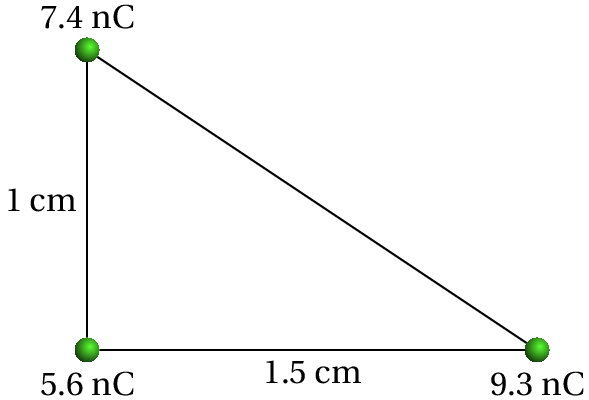

A fotografia mostra um gerador de Wimshurst, inventado na década de 1880. Já no século XVIII existiam máquinas eletrostáticas usadas para gerar cargas eletrostáticas por atrito; a grande inovação de Wimshurst foi a utilização da indução eletrostática, permitindo acumular cargas muito mais elevadas por meios mecânicos. Há diversos mecanismos envolvidos no funcionamento do gerador de Wimshurst, que serão estudados nos próximos capítulos: garrafa de Leiden, rigidez dielétrica, etc.
A acumulação de cargas eletrostáticas é um fenómeno que se manifesta frequentemente na experiência quotidiana, especialmente nos dias em que o ar está mais seco. Um exemplo em que surge esse fenómeno é quando se coloca película aderente de plástico sobre uma tigela e se esfrega o plástico sobre a tigela para que fique colado a esta. A ação de esfregar o plástico origina transferência de cargas elétricas entre o plástico e a tigela, ficando ambos com cargas eletrostáticas que produzem força atrativa. Uma folha de acetato também acumula facilmente cargas eletrostáticas, produzindo força atrativa sobre a folha de papel que se costuma colocar debaixo do acetato. Especialmente no verão, sentem-se por vezes choques elétricos quando se toca um objeto metálico, por exemplo, a porta de um automóvel, ou quando se aperta a mão de outra pessoa. O automóvel ou a outra pessoa têm carga eletrostática e o choque elétrico sentido é devido à passagem de alguma dessa carga através do corpo (corrente elétrica).
Basta usar fita-cola para realizar em casa uma experiência para estudar a transferência de cargas eletrostáticas. Pode ser útil também usar dois lápis ou canetas. Corte aproximadamente 20 cm de fita e cole-a à superfície de uma mesa, deixando uma pequena parte fora da mesa para poder descolar a fita da mesa ficando pendurada livremente no ar (evite que a parte livre toque os dedos ou outros objetos; pode ajudar-se de uma caneta para segurá-la num extremo deixando o outro livre).
Enquanto descolou a fita da mesa, algumas cargas elétricas foram transferidas entre a cola e a mesa; a fita ficou com carga eletrostática que manterá enquanto não tocar outros objetos. Repita o mesmo procedimento com um segundo pedaço de fita, usando a mesma mesa. Como os materiais são os mesmos nos dois casos, espera-se que as duas fitas tenham o mesmo tipo de carga. Aproxime as duas fitas, sem se tocarem e observe a força repulsiva entre cargas do mesmo tipo (figura 1.1). Aproxime alguma das duas fitas de outros objetos sem carga, por exemplo as paredes, de forma que o lado que se aproxima do objeto seja sempre o que não tem cola, para evitar que fique colada. Observe que as fitas com carga são atraídas pelos objetos sem carga.
Deite fora a fita já usada e prepare outros dois pedaços de fita, mas desta vez cole um deles na mesa e o outro sobre o primeiro. Esfregue a fita de cima e descole simultaneamente os dois pedaços da mesa e entre si. Como a cola da fita de cima e o lado sem cola da fita de baixo são dois materiais diferentes, uma das duas superfícies passará carga para a outra, ficando as duas fitas com cargas de tipos diferentes (um com falta de carga e o outro com excesso). Neste caso deve observar-se uma força atrativa entre as duas fitas, tal como na figura 1.2, por terem cargas de tipos diferentes (esta parte da experiência é mais difícil, porque se quando a fita é descolada do rolo já tem carga elétrica as duas fitas já têm no início carga do mesmo tipo, tornando mais difícil conseguir que fiquem com cargas diferentes). Observe também que cada uma das fitas, independentemente do tipo de carga que tiver, é atraída por outros objetos sem carga.
Toda a matéria é formada por átomos. Cada átomo tem um núcleo muito compacto com dois tipos de partículas, protões e neutrões (figura 1.3), rodeado por uma nuvem eletrónica extensa, formada por outro tipo de partículas muito mais pequenas, os eletrões.
Entre dois protões ou dois eletrões atua uma força repulsiva chamada forçaelétrica. Entre um protão e um eletrão atua também uma força elétrica, mas atrativa. A intensidade da força entre dois protões, dois eletrões ou um eletrão e um protão é a mesma, se a distância entre as partículas é igual nos 3 casos. Nos neutrões as outras partículas não exercem nunca nenhuma força elétrica.
Conclui-se que existem dois tipos diferentes de carga, a dos protões e a dos eletrões e que os neutrões não têm carga.
A força elétrica atua unicamente entre duas partículas com carga; a força é repulsiva, se as cargas das partículas é do mesmo tipo, ou atrativa se são de tipos diferentes.
Um átomo neutro (com igual número de protões e de eletrões) e não polarizado (nuvem eletrónica com centro no núcleo), não produz forças elétricas sobre outras partículas com carga. Admite-se assim que protões e eletrões são partículas com cargas elétricas de sinal contrário mas de igual valor absoluto, tendo-se convencionado que os eletrões têm carga negativa e os protões carga positiva. Um conjunto de partículas tem uma carga total igual à soma algébrica das partículas individuais que a constituem.
A unidade SI usada para medir carga é o coulomb, indicado com a letra C. Os protões têm todos a mesma carga, chamada carga elementar, com o seguinte valor:
Os eletrões têm também todos a mesma carga, exatamente igual a .
É necessária uma energia muito elevada para conseguir remover um protão, ou um neutrão, do núcleo de um átomo. Isso só acontece no interior das estrelas ou na camada mais externa da atmosfera, onde chocam partículas cósmicas com muita energia, ou nos aceleradores de partículas onde as energias das partículas são suficientemente elevadas. Para extrair um eletrão de um átomo neutro é necessária uma energia muito menor, ficando então um ião positivo com carga total igual a . Um átomo neutro pode também atrair um eletrão adicional, ficando então um ião negativo com carga total igual a .
Sempre que dois objetos diferentes entram em contacto próximo, há eletrões de um dos objetos que passam para o outro. O objeto que for mais susceptível de perder eletrões fica então eletrizado com carga positiva ( protões em excesso) e o objeto que tiver menos tendência para perder os seus eletrões fica com carga igual (em intensidade) mas negativa ( eletrões em excesso), como no caso da figura 1.4.
Nas experiências com fita-cola descritas no início do capítulo, a cola ajuda a que a mesa e a fita entrem em contacto muito próximo, passando eletrões de uma para a outra. Se a mesa e a fita estão inicialmente descarregadas, após a separação entre elas uma fica com carga negativa e a outra com carga positiva da mesma intensidade. A fricção é também usada como método para eletrizar objetos, por facilitar a passagem de eletrões de um objeto para outro (figura 1.4).
Os diferentes materiais podem ser ordenados numa série triboelétrica (tabela 1.1), em que os,materiais no topo da série são mais susceptíveis de ficar com carga positiva e os materiais no fim da série têm maior tendência para ficar com carga negativa.
| Pele de animal |
| Vidro |
| Cabelo humano |
| Lã |
| Chumbo |
| Seda |
| Alumínio |
| Papel |
| Madeira |
| Cobre |
| Prata |
| Borracha |
| Acetato |
| Esferovite |
| Vinil (PVC) |
Por exemplo, se uma barra de vidro for esfregada com um pano de seda, a barra fica carregada positivamente e a seda negativamente, porque o vidro está acima da seda, na série triboelétrica (ver figura 1.4). Mas se a mesma barra de vidro for esfregada com uma pele de animal, a barra fica com carga negativa e a pele com carga positiva, porque a pele de animal está acima do vidro na série triboelétrica.
A carga elétrica é uma propriedade intrínseca da matéria, tal como a massa. Uma diferença em relação à massa, é que existem cargas de dois tipos bem como partículas sem carga. Duas propriedades muito importantes da carga elétrica são a sua quantização e a sua conservação.
Nos aceleradores de partículas são produzidas colisões entre partículas com energias muito elevadas, que dão origem a muitas outras novas partículas, diferentes dos eletrões, protões e neutrões. Todas as partículas elementares conhecidas têm sempre uma carga que é um múltiplo inteiro da carga elementar ( C). Assim, a carga de qualquer objeto é sempre um múltiplo inteiro da carga elementar.
Nas experiências de eletrostática, as cargas produzidas correspondem normalmente a um número muito elevado de cargas elementares. Nesse caso é boa aproximação admitir que a carga é uma variável continua e não discreta.
Em qualquer processo, a carga total inicial é igual à carga total final. Nos processos de transferência de eletrões entre átomos, esse resultado é óbvio, mas em processos com criação de novas partículas nada indica que tivesse de ser assim. Contudo, em todos os processos observados nos raios cósmicos e nos aceleradores de partículas, há conservação da carga; nos processos em que uma partícula se desintegra dando origem a outras partículas, a soma das cargas de todas as partículas criadas é sempre igual à carga da partícula inicial.
No século XVIII, Benjamin Franklin descobriu que as cargas elétricas distribuídas na superfície de um objeto metálico podem exercer forças elétricas significativas sobre corpos no exterior do objeto, sem no entanto exercerem qualquer força sobre corpos colocados no interior do mesmo.
No século anterior, já Isaac Newton tinha demonstrado de forma matemática que a força gravítica produzida por uma casca oca é nula no seu interior. Esse resultado é consequência da forma como a força gravítica entre partículas diminui em função do quadrado da distância.
Franklin concluiu então que a força elétrica entre partículas com carga deveria ser também proporcional ao inverso do quadrado da distância entre as partículas. Vários anos após o trabalho de Franklin, Charles Coulomb fez experiências para estudar com precisão a intensidade da força eletrostática entre duas cargas pontuais (uma carga pontual é um objeto muito pequeno com carga eletrica).
A lei de Coulomb estabelece que a linha de ação da força elétrica entre duas cargas pontuais e é a linha que passa pelos seus centros e a sua intensidade ( ) é diretamente proporcional ao valor absoluto de cada uma das cargas e inversamente proporcional ao quadrado da distância entre os seus centros:
onde é a distância entre as cargas (figura 1.5) e e são os valores das duas cargas. A constante de Coulomb é uma constante universal com o valor:
As forças elétricas exercidas sobre as duas cargas têm a mesma direção e o mesmo módulo , mas são em sentidos opostos (forças de ação e reação). Se os sinais das duas cargas são iguais, as forças são repulsivas, como no lado esquerdo da figura 1.5, e os seus sinais são diferentes, as forças são atrativas, como mo la do direito da figura 1.5.
A constante (que não deve ser confundida com ), sem unidades, é a constante dielétrica do meio existente entre as duas cargas. A constante dielétrica do vácuo é 1 e a constante dielétrica do ar tem um valor muito próximo desse, pelo que, se o ar for o meio existente entre as cargas, se pode eliminar da equação. Meios diferentes do ar têm constantes dielétricas com valores superiores à unidade, pelo que a força elétrica entre cargas pontuais é menor em meios diferentes do ar.
Considere três cargas pontuais positivas ligadas por fios que formam um triângulo retângulo, como mostra a figura. (a) Qual a tensão no fio que liga as cargas de 7.4 nC e 9.3 nC? (b) Se a carga de 5.6 nC fosse retirada, a tensão calculada na alínea a aumentava ou diminuía?

Resolução. (a) O diagrama de forças sobre a partícula de carga 7.4 nC (designada de partícula número 3) é apresentado na figura à direita, onde e são as forças eletrostáticas produzidas pelas partículas 1 e 2, de cargas 9.3 nC e 5.6 nC respetivamente, e e são as tensões nos fios que ligam a partícula 3 a essas duas cargas. Para que a partícula permaneça em equilíbrio é necessário que:
Antes de fazer contas, é conveniente escrever o valor da constante nas unidades usadas no problema (nC e cm):
Admitindo que há ar à volta das cargas, a tensão no fio que liga as cargas 1 e 3 é:
(b) O valor da tensão permanecia igual, pois como se mostrou na alínea anterior, neste caso, não depende da força produzida pela partícula de 5.6 nC.
Uma forma de interpretar a força eletrostática entre duas partículas com carga consiste em admitir que cada carga elétrica cria à sua volta um campo de forças que atua sobre outras partículas com carga. Se colocarmos uma partícula com carga num ponto onde existe um campo elétrico, o resultado será uma força elétrica sobre a partícula; o campo elétrico define-se como a força sobre a partícula, por unidade de carga:
Como tal, o campo elétrico num ponto é igual à força elétrica que sentiria uma carga unitária positiva colocada nesse ponto.
De forma inversa, sabendo que num ponto existe um campo elétrico , a força elétrica que atua sobre uma partícula com carga colocada nesse ponto calcula-se multiplicando a carga pelo campo: . Basta conhecer o campo para calcular a força; não é necessário saber quais as cargas que deram origem a esse campo. Em unidades SI, o campo elétrico mede-se em newton por coulomb (N/C).
Como vimos, a força elétrica produzida por uma carga pontual positiva sobre uma segunda carga de prova positiva é sempre uma força repulsiva, cuja intensidade diminui proporcionalmente com o quadrado da distância. Assim, o campo elétrico produzido por uma carga pontual positiva é representado por vetores com direção radial e sentido a afastar-se da carga, como se mostra no lado esquerdo da figura 1.6.
Uma forma mais conveniente de representar esse campo vetorial é através das linhas de campo, como no lado direito da figura 1.6. Em cada ponto, a linha de campo que passa por esse ponto aponta na direção do vetor campo elétrico nesse ponto. A intensidade do campo elétrico é maior nas regiões onde as linhas de campo estão mais próximas umas das outras.
Para determinar o valor do campo elétrico produzido pela carga pontual num ponto, coloca-se uma carga de prova nesse ponto, determina-se a força elétrica , e divide-se pela carga . Usando a lei de Coulomb, obtém-se o seguinte resultado para o módulo do campo elétrico produzido pela carga
onde é a distância do ponto à carga . O sinal da carga indica se o campo é repulsivo ( ) ou atrativo ( ).
O campo elétrico criado por uma única carga pontual é demasiado fraco para ser observado. Os campos observados experimentalmente são a soma vetorial dos campos criados por muitas cargas pontuais e o campo resultante pode ter linhas de campo curvilíneas como no exemplo da figura 1.7.
Para calcular o campo elétrico de cargas não pontuais, a região onde existe carga pode ser dividida em muitas regiões infinitesimalmente pequenas, que possam ser consideradas cargas pontuais, e o campo total é a sobreposição dos campos de todas as cargas infinitesimais. A soma dos campos de várias cargas infinitesimais conduz a um integral. O estudo desse método para calcular campos encontra-se para além dos objetivos deste livro introdutório, mas no apêndice B ilustra-se o cálculo do campo por integração, num caso concreto que será útil num capítulo seguinte.
Num certo ponto, a força sobre uma carga de prova de 5 nC é de N e tem a direção e sentido do eixo dos . Calcule o campo elétrico nesse ponto. Qual seria a força exercida sobre um eletrão nesse mesmo ponto?
Resolução. A partir da força calcula-se o campo:
A força elétrica sobre um eletrão nesse ponto seria:
Em alguns materiais, como nos metais, o eletrão mais externo de alguns átomos consegue libertar-se do átomo e deslocar-se livremente pelo material; existe assim uma "nuvem" densa de eletrões livres (eletrões de condução), com densidade constante se o material for homogéneo. Esse tipo de material é designado de condutor. Um material que não seja condutor diz-se isolador; dentro de um isolador, as cargas elétricas não se podem deslocar livremente.
Se um condutor é colocado numa região onde existe campo elétrico, como a nuvem eletrónica de condução tem carga negativa, desloca-se no sentido oposto às linhas de campo. O deslocamento dos eletrões de condução faz surgir carga negativa num extremo (excesso de eletrões) e carga positiva no extremo oposto (falta de eletrões). Se a carga total do condutor é nula, o valor absoluto dessas cargas nos extremos será igual. Essas cargas de sinais opostos nos extremos opostos do condutor produzem um campo elétrico interno, no sentido oposto ao campo externo e quando as cargas acumuladas nos extremos sejam suficientemente elevadas, dentro do condutor os dois campos se anulam e o movimento dos eletrões de condução cessa.
A figura 1.8 mostra uma barra com carga positiva, colocada na proximidade de uma esfera condutora montada num suporte isolador; a nuvem eletrónica de condução na esfera aproxima-se da barra, deixando carga positiva na região mais afastada da barra e a mesma quantidade de carga negativa na região mais próxima da barra. Se o suporte não fosse isolador, entravam no condutor eletrões do suporte e as cargas positivas indicadas na figura desapareciam.
Se a barra tivesse carga negativa, em vez de positiva, as posições das cargas positivas e negativas na esfera seriam trocadas. Uma vez acumuladas cargas de sinais opostos nos extremos da esfera, o campo elétrico total dentro da esfera é nulo; como tal, as linhas de campo não penetram na esfera e os eletrões de condução dentro da esfera não sentem qualquer força elétrica. Nos dois casos (barra com carga positiva ou negativa), as cargas na superfície da esfera mais próxima da barra são atraídas para a barra e essa atração é maior do que a repulsão sobre as cargas na superfície mais afastada da barra. Como tal, qualquer objeto externo com carga de qualquer sinal produz sempre uma força atrativa nos condutores com carga total nula.
Se a mesma experiência é realizada com uma esfera isoladora (figura 1.9), não há acumulação de cargas nos extremos; consequentemente, o campo no interior da esfera não se anula e todas as moléculas dentro dela são polarizadas, nomeadamente, a sua própria nuvem eletrónica desloca-se no seu interior, no sentido oposto do campo. Neste caso (barra com carga positiva), a nuvem eletrónica das moléculas deixa de estar centrada no mesmo ponto das cargas positivas, passando a estar centrada num ponto mais próximo da barra; cada molécula torna-se um pequeno dipolo elétrico, que é um sistema com carga total nula, mas com as cargas positivas e negativas em pontos diferentes.
A figura 1.9 mostra alguns dipolos dentro da esfera. O lado dos dipolos que está mais próximo da barra tem sempre carga de sinal oposto ao da carga na barra. Consequentemente, a força resultante em cada dipolo é atrativa e a sobreposição de todas essas forças faz com que a esfera seja atraída para a barra. Ou seja, um material isolador sem carga é sempre atraído pelos objetos com carga, independentemente do sinal da carga desses objetos.
Um método usado para carregar dois condutores isolados, ficando com cargas idênticas mas de sinais opostos, é o método de carga por indução ilustrado na figura 1.10.
Os dois condutores isolados são colocados em contacto e aproxima-se de um deles um objeto carregado, como indicado na figura 1.10. O campo elétrico produzido pelo objeto carregado induz uma carga de sinal oposto no condutor mais próximo e uma carga do mesmo sinal no condutor mais afastado. Em seguida, mantendo o objeto carregado fixo, separam-se os dois condutores. Finalmente, afasta-se o objeto carregado, ficando os dois condutores com cargas opostas (iguais em valor absoluto se nenhuma das esferas tiver carga inicialmente). Em cada condutor as cargas distribuem-se pela superfície, devido à repulsão entre elas, mas as cargas dos dois condutores já não podem recombinar-se por não existir contacto entre eles.
No gerador de Wimshurst, usa-se esse método para gerar cargas de sinais opostos. Os condutores que entram em contacto são duas pequenas lâminas metálicas diametralmente opostas sobre um disco isolador, quando passam por duas escovas metálicas ligadas a uma barra metálica (figura 1.11). As duas lâminas permanecem em contacto apenas por alguns instantes, devido a que o disco roda.
Se no momento em que duas das lâminas de um disco entram em contacto uma lâmina do disco oposto estiver carregada, essa carga induzirá cargas de sinais opostos nas duas lâminas que entraram em contacto. Essas cargas opostas induzidas em duas regiões do disco induzem também cargas no disco oposto, porque nesse disco também há uma barra que liga temporariamente as lâminas diametralmente opostas.
Em cada disco, após induzirem cargas no disco oposto, as cargas saltam para dois coletores ligados a duas garrafas metálicas; uma das garrafas armazena carga positiva e a outra carga negativa. Quando as cargas acumuladas nas garrafas forem elevadas produz-se uma descarga elétrica entre as pontas de duas barras ligadas às garrafas, ficando descarregadas. Essa descarga elétrica é um pequeno trovão com uma faísca bastante luminosa.
Os dois discos rodam em sentidos opostos; as escovas que estabelecem o contacto entre lâminas e os dois coletores estão colocados de forma a que na rotação de cada disco, cada lâmina passa primeiro frente à escova, onde troca carga com a lâmina na escova oposta, a seguir passa frente a uma das escovas no disco do outro lado, induzindo cargas nas lâminas do disco oposto e logo passa frente ao coletor, ficando descarregada e pronta para reiniciar o ciclo.
A cada ciclo as cargas induzidas aumentam, porque cada lâmina é induzida pelas cargas de várias lâminas no disco oposto. Para iniciar o processo basta com que uma das lâminas tenha adquirido alguma carga, embora seja muito reduzida, a partir do ar ou pela fricção com as escovas. O sinal dessa carga inicial determina qual das garrafas acumula carga positiva e qual negativa.
(Para conferir a sua resposta, clique nela.)


Perguntas: 1. A. 2. E. 3. E. 4. D. 5. C.
Problemas
Os núcleos dos átomos do papel (positivos) são repelidos pela carga positiva da barra, mas também há forças atrativas a atuar nos eletrões dos átomos.
(clique para continuar)
Os núcleos e eletrões dos átomos nas moléculas do papel sentem forças em sentido oposto, mas a resultante não será nula porque as moléculas são polarizadas (afastamento de cargas positivas e negativas) pelo campo da barra.
(clique para continuar)
Como o enunciado diz que a barra tem carga, se esta for condutora, estará isolada. O sentido das linhas de campo da barra só depende do sinal das cargas nela e não do tipo de material da barra.
(clique para continuar)
O papel húmido é melhor condutor que o papel seco, mas tanto nos condutores como nos isoladores, o sentido da polarização das cargas dentro de um material neutro é o mesmo (depende apenas do sentido do campo elétrico externo).
(clique para continuar)
Todos os materiais neutros, independentemente de serem condutores ou isoladores têm igual número de eletrões do que protões. E todos os materiais carregados terão eletrões ou protões em excesso (depende do sinal da carga total). O sinal das cargas em excesso não serve para distinguir condutores de isoladores.
(clique para continuar)
Todos os materiais neutros, independentemente de serem condutores ou isoladores têm igual número de eletrões do que protões. E todos os materiais carregados terão eletrões ou protões em excesso (depende do sinal da carga total). O sinal das cargas em excesso não serve para distinguir condutores de isoladores.
(clique para continuar)
O número de eletrões num material tem mais a ver com o número de átomos e o número atómico de cada um desses átomos. Esse número não serve como critério para distinguir condutores de isoladores.
(clique para continuar)
Num condutor as cargas em excesso distribuem-se na superfície, mantendo as moléculas imunes ao efeito do campo elétrico. Assim, as moléculas dentro de um condutor não são polarizadas e não interessa a facilidade com que elas sejam deformadas.
(clique para continuar)
Essa é a caraterística que define um condutor.
(clique para continuar)
Há que calcular os módulos das forças entre as cargas e e entre as cargas e (usando a lei de Coulomb), e subtraí-los, porque as duas forças são vetores com a mesma direção, mas sentidos opostos.
(clique para continuar)
Há que calcular os módulos das forças entre as cargas e e entre as cargas e (usando a lei de Coulomb), e subtraí-los, porque as duas forças são vetores com a mesma direção, mas sentidos opostos.
(clique para continuar)
As forças produzidas pelas outras duas cargas têm sentidos opostos, mas não se anulam porque têm módulos diferentes.
(clique para continuar)
Há que calcular os módulos das forças entre as cargas e e entre as cargas e (usando a lei de Coulomb), e subtraí-los, porque as duas forças são vetores com a mesma direção, mas sentidos opostos.
(clique para continuar)
Há que calcular os módulos das forças entre as cargas e e entre as cargas e (usando a lei de Coulomb), e subtraí-los, porque as duas forças são vetores com a mesma direção, mas sentidos opostos.
(clique para continuar)
A carga final não pode ser nula. A conservação da carga implica que a soma das cargas no fim deve ser igual à carga inicial .
(clique para continuar)
Como a carga total inicial era , a conservação da carga implica que a soma das 3 cargas no fim deverá ser igual à carga inicial .
(clique para continuar)
Se assim fosse, a carga final seria , que não é igual à carga total inicial, .
(clique para continuar)
A soma das 3 cargas deverá ser igual à carga inicial. As 3 esferas em contacto atuam como um único condutor, em que a carga total distribui-se pela sua superfície. Como as esferas são iguais, por simetria, na superfície de cada uma fica a mesma carga. No capítulo 7 demonstra-se que se as esferas tivessem raios diferentes, as cargas nelas não seriam iguais.
(clique para continuar)
A carga total final não pode ser 0, porque a conservação da carga implica que deverá ser igual à carga inicial .
(clique para continuar)
Quando a barra é aproximada ao condutor, são transferidas cargas negativas da terra para o condutor. A eliminação da ligação à terra faz com que essas cargas fiquem no condutor, sem poderem regressar para a terra.
(clique para continuar)
Como no fim o condutor está isolado, as cargas que tiver já deveriam estar lá quando o condutor estava ligado à terra. Se no condutor ligado à terra houver cargas positivas, a força repulsiva produzida nelas pela barra afastá-las-ia para a terra, fora do condutor.
(clique para continuar)
Quando a barra é aproximada ao condutor, transfere-se carga negativa da terra para o condutor (e a terra adquire cargas positivas). Quando se afasta a barra, essas cargas não podem recombinar-se novamente, porque nesse momento já não há ligação à terra e, como tal, não podem haver passagem de cargas entre a terra e o condutor.
(clique para continuar)
Quando a barra é aproximada ao condutor, são transferidas cargas negativas da terra para o condutor. Se a carga da barra fosse negativa, seriam transferidas cargas positivas para o condutor.
(clique para continuar)
No fim a barra já foi afastada, assim que qualquer carga que houver no condutor, independentemente do sinal, será distribuída por toda a sua superfície.
(clique para continuar)
Cada molécula do papel é polarizada, ficando as cargas negativas mais próximas da barra e, portanto, a repulsão sobre as cargas positivas de cada molécula será menor do que a atração sobre as cargas negativas.
(clique para continuar)